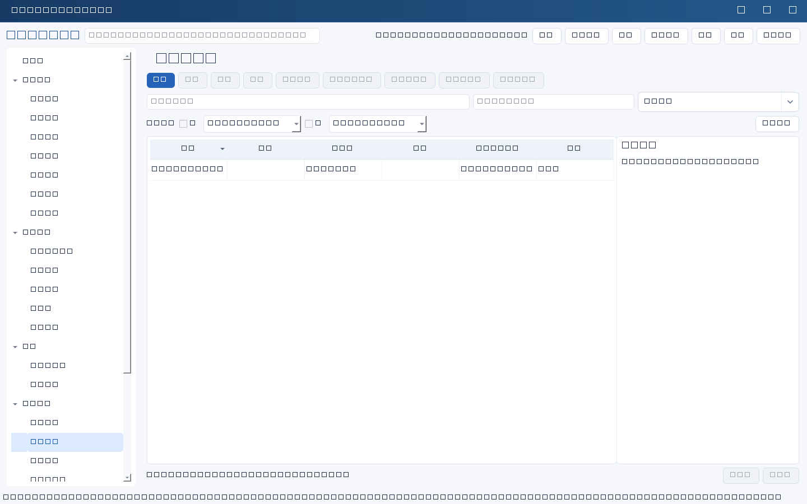
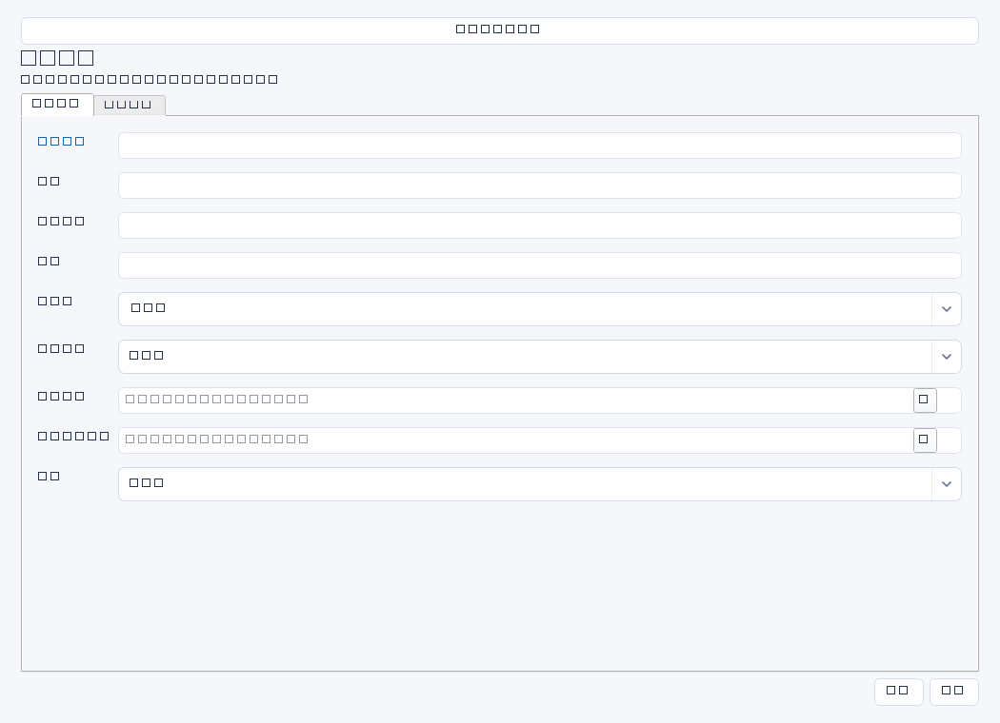

登记服务器、网络设备、终端、软件许可等资产的归属、位置、生命周期和维保依据，支撑盘点、责任交接与服务连续性。


操作步骤与资料获取
- 取得采购验收单、财务资产清单和维保合同，再通过现场标签或管理控制台核实设备型号、编号与位置。
- 新增资产，一项可辨识对象一条记录；填写资产编号、责任人与所属系统，避免把多个不可区分设备混在同一条。
- 核对采购日期和维保到期日，证据留发票/验收单索引、维保确认及盘点记录，不将财务账面值自行推算填入不存在的字段。
- 在调拨、报废、系统迁移或维保变更时人工更新，补充交接及处置证据。
字段逐项说明
| 操作 / 字段 | 详细说明 |
|---|---|
| 名称 | 资产显示名称，强制非空；建议类型＋用途＋位置，如“ERP数据库服务器01”。 |
| 类型 | 服务器、网络设备、终端、许可等自由文本；建议团队采用统一分类。 |
| 资产编号 | 企业资产标签或财务编号；建议唯一并与实物一致，但系统不强制唯一。 |
| 位置 | 机房、机柜、楼层或云区域等实际位置；敏感机房细节按资料权限控制。 |
| 责任人 | 保管、运维或服务责任人姓名；建议在证据说明责任类型及交接日期。 |
| 系统ID | 可选所属业务系统；非空时强制引用存在且未归档的systems记录，共享资产可在证据补充多系统用途。 |
| 采购日期 | 以采购/验收资料确定的日期；非空时强制YYYY-MM-DD，建议统一按采购日期口径。 |
| 维保到期日期 | 合同或厂商确认的服务到期日；非空时强制YYYY-MM-DD，不会据此自动续费。 |
| 状态 | 使用界面通用状态记录管理进展；具体在用、闲置、待报废等生命周期信息建议在名称或证据补充，不应假定有专用资产枚举。 |
| 证据 | 登记采购验收、维保确认、实物盘点和交接凭证的位置、日期及编号；普通文本。 |


示例（仅演示）
| 操作 / 字段 | 详细说明 |
|---|---|
| 名称 | ERP数据库服务器01（在用） |
| 类型 | 服务器 |
| 资产编号 | IT-SRV-2024-018 |
| 位置 | 总部机房A区03机柜 |
| 责任人 | 陈晨 |
| 系统ID | |
| 采购日期 | 2024-05-20 |
| 维保到期日期 | 2027-05-19 |
| 状态 | 进行中 |
| 证据 | 验收单YS-20240520、维保函WB-018、2026-04盘点记录；受控资料库/资产/018 |
形成闭环
- 盘点差异逐项确认：实物、账面、用途、责任人和维保期限一致后留存签认。
- 处置时确认数据擦除、许可回收和交接手续，证据中记录处置单及验证结果。
- 定期人工检查维保到期风险并决定续保或替换；保存到期日不是执行采购。
常见误区与边界
- 资产编号重复不会自动报错，需人工盘点或检索去重。
- 以为设置状态已关闭就完成资产报废或安全擦除。
- 把同一系统的所有设备合为一条，导致维保日期和责任人失真。